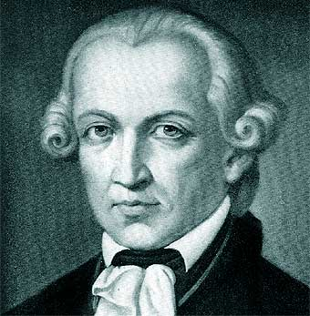

Immanuel Kant
(Königsberg, hoy Kaliningrado, actual Rusia, 1724 - id., 1804) Filósofo alemán. Hijo de un modesto guarnicionero, fue educado en el pietismo. En 1740 ingresó en la Universidad de Königsberg como estudiante de teología y fue alumno de Martin Knutzen, quien lo introdujo en la filosofía racionalista de Leibniz y Christian Wolff, y le imbuyó así mismo el interés por la ciencia natural, en particular, por la mecánica de Newton.

Aportes a la Filosofía
En el pensamiento de Kant suele distinguirse un período inicial, denominado precrítico, caracterizado por su apego a la metafísica racionalista de Wolff y su interés por la física de Newton. En 1770, tras la obtención de la cátedra, se abrió un lapso de diez años de silencio durante los que acometió la tarea de construir su nueva filosofía crítica, después de que el contacto con el empirismo escéptico de David Hume le permitiera, según sus propias palabras, «despertar del sueño dogmático».
En 1781 se abrió el segundo período en la obra kantiana, al aparecer finalmente la Crítica de la razón pura, en la que trata de fundamentar el conocimiento humano y fijar asimismo sus límites; el giro copernicano que pretendía imprimir a la filosofía consistía en concebir el conocimiento como trascendental, es decir, estructurado a partir de una serie de principios a priori impuestos por el sujeto que permiten ordenar la experiencia procedente de los sentidos; resultado de la intervención del entendimiento humano son los fenómenos, mientras que la cosa en sí (el nóumeno) es por definición incognoscible.
Pregunta fundamental en su Crítica es la posibilidad de establecer juicios sintéticos (es decir, que añadan información, a diferencia de los analíticos) y a priori (con valor universal, no contingente), cuya posiblidad para las matemáticas y la física alcanzó a demostrar, pero no para la metafísica, pues ésta no aplica las estructuras trascendentales a la experiencia, de modo que sus conclusiones quedan sin fundamento; así, el filósofo puede demostrar a la vez la existencia y la no existencia de Dios, o de la libertad, con razones válidas por igual.
El sistema fue desarrollado por Kant en su Crítica de la razón práctica, donde establece la necesidad de un principio moral a priori, el llamado imperativo categórico, derivado de la razón humana en su vertiente práctica; en la moral, el hombre debe actuar como si fuese libre, aunque no sea posible demostrar teóricamente la existencia de esa libertad. El fundamento último de la moral procede de la tendencia humana hacia ella, y tiene su origen en el carácter a su vez nouménico del hombre.
Kant trató de unificar ambas "Críticas" con una tercera, la Crítica del juicio, que estudia el llamado goce estético y la finalidad en el campo de la naturaleza. Cuando en la posición de fin interviene el hombre, el juicio es estético; cuando el fin está en función de la naturaleza y su orden peculiar, el juicio es teleológico. En ambos casos cabe hablar de una desconocida raíz común, vinculada a la idea de libertad. A pesar de su carácter oscuro y hermético, los textos de Kant operaron una verdadera revolución en la filosofía posterior, cuyos efectos llegan hasta la actualidad.
La filosofía de Kant en nuestro día a día
A veces pensamos que los filósofos aportan ideas muy interesantes para el espíritu y la mente, pero que sus obras tienen poca utilidad práctica. Sin embargo, la filosofía es una ciencia que tiene gran repercusión en nuestra vida cotidiana. Como ejemplo, les invito a repasar el pensamiento de Immanuel Kant y la herencia que nos dejó.
Aunque no hayan leído los libros originales - son bastante densos por lo general- sí es interesante que los hombres que pretenden regir los puestos de una nación, conozcan y entiendan las propuestas de aquellos que profundizaron sobre los fundamentos de la vida en sociedad. En ese contexto, llama la atención que ambos políticos hayan mencionado a Kant. La política es la ciencia del gobierno y la organización de la sociedad, pero también es el arte de la negociación para conciliar intereses. Además de sus otros logros, Kant fue un gran conciliador.
En la época de Immanuel Kant -siglo XVIII, el siglo de la Ilustración- predominaban en Europa dos teorías filosóficas que estaban en las antípodas y luchaban por imponerse la una a la otra. Por un lado estaba el Racionalismo, que había nacido el siglo anterior de la mano del francés René Descartes, y por otro el Empirismo, cuyo adalid era el inglés John Locke. Descartes argumentaba que los conocimientos humanos se originan en la razón, que las ideas son innatas al hombre, y que no se necesitaba de los sentidos paara aprender. En contra del "pienso, luego existo" de Descartes se posicionaban John Locke y sus seguidores. Para los empiristas, el conocimiento humano se origina en la experiencia, ya que cuando nacemos nuestra mente es una tabla rasa. Sólo es real y existe lo que podemos conocer por os sentidos, percepciones e impresiones.
En ese estado de cosas aparece Kant, un hombre metódico y sosegado que nació en una tranquila ciudad de Prusia y murió sin haber salido nunca de ella, y dice en tono conciliador: no es necesario acalorarse, ambos bandos están en lo cierto... pero solo en parte. Porque las razones por sí solas no valen, son vacías, y las experiencias por sí solas tampoco valen, son ciegas. Las dos juntas se complementan, los conocimientos empiezan con la experiencia pero se completan con la razón. Es decir, la experiencia necesita de ideas.
Kant no sólo influyó en la concepción de la política nacional, también dejó huella en la política internacional. En "La paz perpetua" discierne sobre cómo lograr el bienestar de los pueblos, como lograr una alianza o federación de naciones que renuncien a parte de su soberanía para vivir en paz. Este estudio fue la semilla de las Naciones Unidas, y eventualmente de la Nación Europea. No fue el único pensador que reflexionó sobre estos temas pero sí uno de los pioneros.
Tal fue el legado de un hombre cuyo cuerpo nunca salió de su pueblo pero cuya mente viajó libre traspasando prejuicios y fronteras.